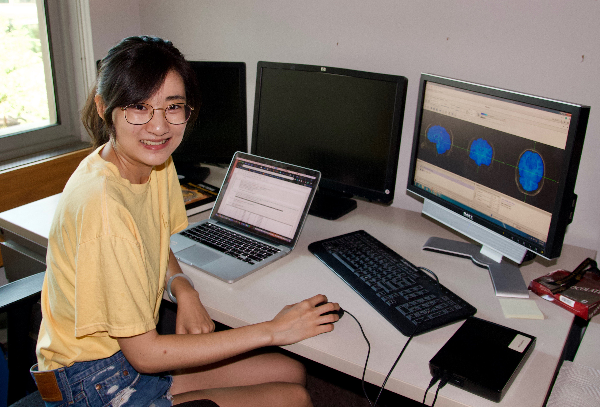

|  |
- Now a PhD student with Dr. Monica Rosenberg at University of Chicago, Ziwei worked with me from October 2017 through spring 2020, via practicum, independent study, and distinction thesis courses.
- She earned two travel awards from the Charles LaFitte Program in Psychology and Neuroscience at Duke University and became a Summer Neuroscience Program fellow.
- She presented three posters at conferences, two of which were first-authored (Summer Neuroscience Program 2019, Cognitive Neuroscience Society 2019, NC Cognition 2018). She also presented three times in lab meeting on her various projects.
- She contributed to at least two lab publications (Psychonomic Bulletin & Review, Psychological Science). You can also find some of her other contributions online: e.g., the OSF wiki for our Psychological Science paper, PsychoPy code for her own independent project, etc. This, of course, does not include less explicit contributions (e.g., lab culture, mentoring) or those not available online.
- Resources & Goals: Ziwei joined the Egner lab with the goal of going to graduate school, so in her first semester, I tentatively outlined what a long-term plan might look like. I made a guide on our study and an Excel tutorial so that she could get comfortable playing with our data, and we also went through the Jupyter notebook analysis script. We revised these research plans in spring 2018 and discussed the structure of journal introductions as example literature reviews. Her subsequent review on subliminal cueing inspired our Psych Sci project. In fall 2018, Ziwei coded a version of our Psych Sci project in PsychoPy, which was then edited. We made a plan for her time in SNP when she was independently analyzing fMRI data, checked in about her independent first-author behavioral project, and exchanged many drafts of graduate school statements and other items (e.g., thesis introduction).
|